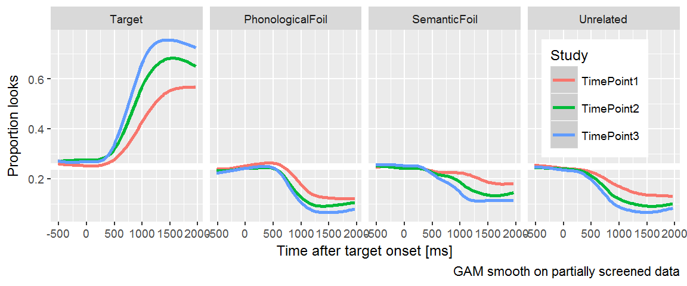
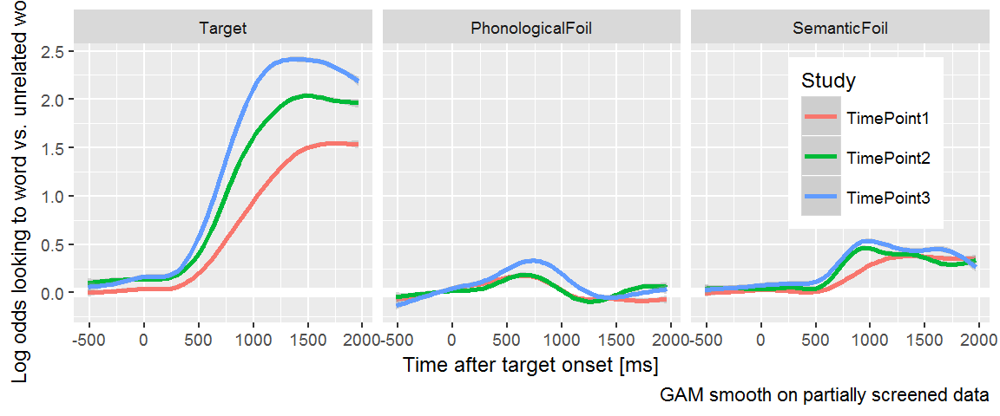
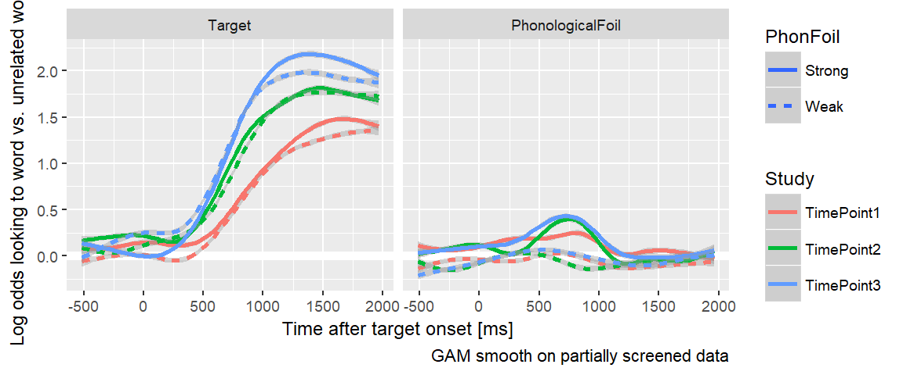
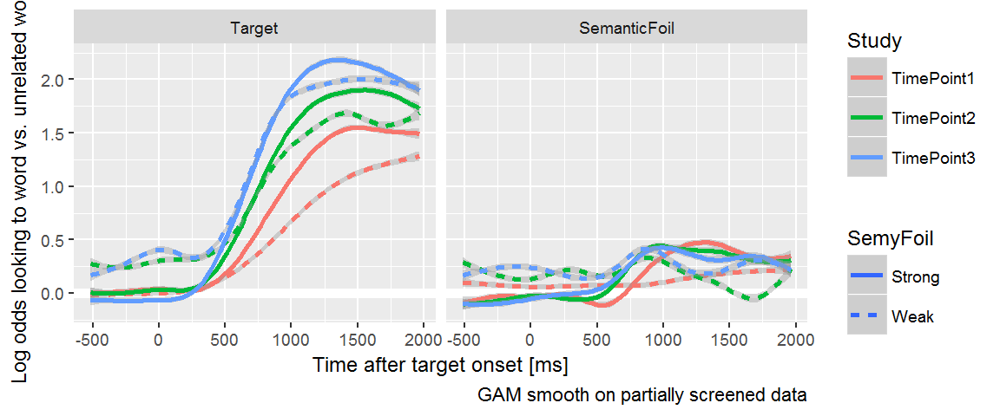
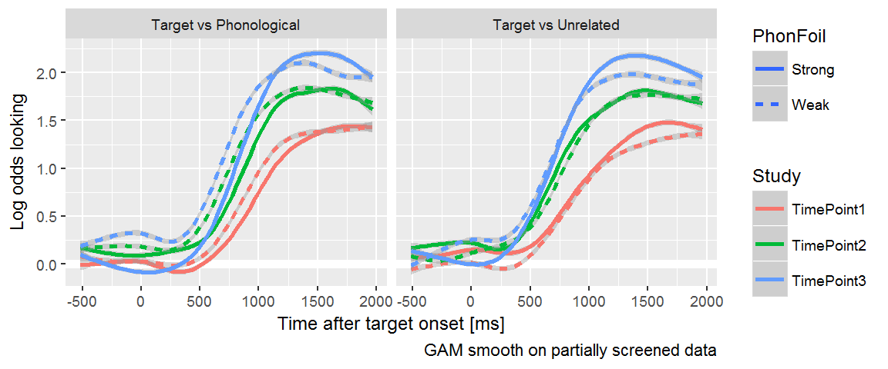

Chapter 11 Visualize looks to each image type
We continue our exploration of the raw data by aggregating looks to each image type.
library(dplyr)
#> Warning: package 'dplyr' was built under R version 3.4.2
library(rlang)
library(littlelisteners)
library(ggplot2)
#' group `data` by some grouping variables (`...`),
#' randomly select `size` of the groups
#' keep just the data from those sampled groups
sample_n_of <- function(data, size, ...) {
dots <- quos(...)
rows <- data_frame(row = seq_len(nrow(data)))
rows[, "group"] <- data %>%
group_by(!!! dots) %>%
group_indices()
subset <- rows %>%
filter(.data$group %in% sample(unique(.data$group), size)) %>%
pull(.data$row)
data[subset, ]
}
create_pairs <- function(xs) {
if (!is.factor(xs)) xs <- ordered(xs)
xs %>%
levels() %>%
rev() %>%
combn(2) %>%
t() %>%
as.data.frame() %>%
set_names("x1", "x2") %>%
mutate(name = paste0(.data$x1, "-", .data$x2)) %>%
mutate_all(as.character) %>%
arrange(x1, desc(x2))
}
compare_pairs <- function(data, levels, values, f = `-`) {
levels <- enquo(levels)
values <- enquo(values)
pairs <- data %>% pull(!! levels) %>% create_pairs()
wide <- tidyr::spread(data, !! levels, !! values)
for (row_i in seq_len(nrow(pairs))) {
pair_i <- pairs[row_i, ]
wide[, pair_i$name] <- f(wide[[pair_i$x1]], wide[[pair_i$x2]])
}
wide %>%
select(-one_of(c(pairs$x1), c(pairs$x2))) %>%
tidyr::gather("pair", "value", one_of(c(pairs$name))) %>%
mutate(pair = factor(.data$pair, levels = pairs$name))
}
tidy_corr <- function(df, ..., .type = c("pearson", "spearman")) {
vars <- quos(...)
select(df, !!! vars) %>%
as.matrix() %>%
Hmisc::rcorr(type = .type) %>%
broom::tidy() %>%
tibble::remove_rownames() %>%
arrange(.data$column1, .data$column2)
}Earlier we cleaned the data to remove trials with excessive missing data and blocks of trials with too few trials. Read in that data.
data <- readr::read_csv("./data/aim1-screened.csv.gz")Plot growth curves to each AOI.
resp_def <- create_response_def(
primary = "Target",
others = c("PhonologicalFoil", "SemanticFoil", "Unrelated"),
elsewhere = "tracked",
missing = NA
)
defs <- cycle_response_def(resp_def)
# We use this later on
semy_defs <- defs %>%
purrr::keep(~ .x$primary %in% c("Target", "SemanticFoil"))
phon_defs <- defs %>%
purrr::keep(~ .x$primary %in% c("Target", "PhonologicalFoil"))
# Aggregate looks using each rule
looks_by_aoi <- data %>%
aggregate_looks(defs, Study + ResearchID + Time ~ GazeByImageAOI) %>%
rename(AOI = .response_def) %>%
select(AOI:Time, Prop, Primary, Unrelated) %>%
mutate(AOI = factor(AOI, c("Target", "PhonologicalFoil",
"SemanticFoil", "Unrelated")))
ggplot(looks_by_aoi) +
aes(x = Time, y = Prop, color = Study) +
geom_hline(size = 2, color = "white", yintercept = .25) +
stat_smooth() +
facet_grid( ~ AOI) +
labs(x = "Time after target onset [ms]",
y = "Proportion looks",
caption = "GAM smooth on partially screened data") +
theme_grey(base_size = 9) +
theme(legend.position = c(0.95, 0.95),
legend.justification = c(1, 1))
#> `geom_smooth()` using method = 'gam'
Normalize by using ratio of looks to each AOI versus the unrelated image.
ggplot(looks_by_aoi %>% filter(AOI != "Unrelated")) +
aes(x = Time, y = log(Primary / Unrelated), color = Study) +
geom_hline(size = 2, color = "white", yintercept = 0) +
stat_smooth() +
facet_grid( ~ AOI) +
labs(x = "Time after target onset [ms]",
y = "Log odds looking to word vs. unrelated word",
caption = "GAM smooth on partially screened data") +
theme_grey(base_size = 9) +
theme(legend.position = c(0.95, 0.95),
legend.justification = c(1, 1))
#> `geom_smooth()` using method = 'gam'
#> Warning: Removed 10559 rows containing non-finite values (stat_smooth).
Each curve is the log odds of looking to the target, phonological foil, and semantic foil versus the unrelated word. Positive values mean more looks to an image type than the unrelated. If you think of the y axis as the image’s relatedness to the target, you can see a time course of relatedness in each panel: Here early phonological effects meaning early relatedness and later, flatter semantic effects meaning late relate relatedness. (Which makes extra sense if phonological representations come into play before semantic ones.)
This plot suggests an important finding: Children becoming more sensitive to the phonological and semantic foils as they grow older. (I use the verb suggest because this is still a preliminary finding). Jan and I had made opposite predictions about whether this would happen. Her argument, I think, was that children become better at word recognition by becoming better able to inhibit interference from competing words. This plot would suggest that they show increased sensitive to the target and foils words by looking less to the unrelated word as they age and reapportioning those looks to the other three lexically relevant words.
11.1 Comparing strong versus weak foils
In Law et al. (2016), we ignored trials for certain items where we didn’t think the phonological or semantic similarity was strong enough.
trial_info <- bind_rows(
readr::read_csv("data-raw/rwl_timepoint1_trials.csv.gz"),
readr::read_csv("data-raw/rwl_timepoint2_trials.csv.gz"),
readr::read_csv("data-raw/rwl_timepoint3_trials.csv.gz")) %>%
select(TrialID, Target = WordTarget,
PhonologicalFoil = WordPhonologicalFoil,
SemanticFoil = WordSemanticFoil,
Unrelated = WordUnrelated)
good_phono <- c("bear", "bee", "bell", "dress", "drum", "flag", "fly",
"heart", "horse", "pan", "pear", "pen", "vase")
good_semy <- c("bear", "bee", "bell", "bread", "cheese", "dress",
"drum", "fly", "horse", "pan", "pear", "shirt", "spoon")
words <- trial_info %>%
distinct(Target, PhonologicalFoil, SemanticFoil, Unrelated)
phono_foils <- split(words, words$Target %in% good_phono) %>%
lapply(arrange, Target) %>%
setNames(c("weak_foil", "strong_foil"))
semy_foils <- split(words, words$Target %in% good_semy) %>%
lapply(arrange, Target) %>%
setNames(c("weak_foil", "strong_foil"))
phono_foils$strong_foil %>%
knitr::kable(caption = "Trials with strong phonological foils.")| Target | PhonologicalFoil | SemanticFoil | Unrelated |
|---|---|---|---|
| bear | bell | horse | ring |
| bee | bear | fly | heart |
| bell | bee | drum | swing |
| dress | drum | shirt | swing |
| drum | dress | bell | sword |
| flag | fly | kite | pear |
| fly | flag | bee | pen |
| heart | horse | ring | bread |
| heart | horse | ring | pan |
| horse | heart | bear | pan |
| pan | pear | spoon | vase |
| pan | pear | spoon | bell |
| pear | pen | cheese | ring |
| pear | pen | cheese | vase |
| pen | pear | sword | van |
| vase | van | gift | swan |
phono_foils$weak_foil %>%
knitr::kable(caption = "Trials with weak phonological foils.")| Target | PhonologicalFoil | SemanticFoil | Unrelated |
|---|---|---|---|
| bread | bear | cheese | vase |
| cheese | shirt | bread | van |
| gift | kite | vase | bread |
| kite | gift | flag | shirt |
| ring | swing | dress | flag |
| shirt | cheese | dress | fly |
| spoon | swan | pan | drum |
| swan | spoon | bee | bell |
| swan | spoon | bee | ring |
| swing | spoon | kite | heart |
| sword | swan | pen | gift |
| van | pan | horse | sword |
semy_foils$strong_foil %>%
knitr::kable(caption = "Trials with strong semantic foils.")| Target | PhonologicalFoil | SemanticFoil | Unrelated |
|---|---|---|---|
| bear | bell | horse | ring |
| bee | bear | fly | heart |
| bell | bee | drum | swing |
| bread | bear | cheese | vase |
| cheese | shirt | bread | van |
| dress | drum | shirt | swing |
| drum | dress | bell | sword |
| fly | flag | bee | pen |
| horse | heart | bear | pan |
| pan | pear | spoon | vase |
| pan | pear | spoon | bell |
| pear | pen | cheese | ring |
| pear | pen | cheese | vase |
| shirt | cheese | dress | fly |
| spoon | swan | pan | drum |
semy_foils$weak_foil %>%
knitr::kable(caption = "Trials with weak semantic foils.")| Target | PhonologicalFoil | SemanticFoil | Unrelated |
|---|---|---|---|
| flag | fly | kite | pear |
| gift | kite | vase | bread |
| heart | horse | ring | bread |
| heart | horse | ring | pan |
| kite | gift | flag | shirt |
| pen | pear | sword | van |
| ring | swing | dress | flag |
| swan | spoon | bee | bell |
| swan | spoon | bee | ring |
| swing | spoon | kite | heart |
| sword | swan | pen | gift |
| van | pan | horse | sword |
| vase | van | gift | swan |
We should verify that the two sets of words behave differently.
weak_phon_looks <- trial_info %>%
semi_join(phono_foils$weak_foil) %>%
inner_join(data) %>%
mutate(PhonFoil = "Weak")
#> Joining, by = c("Target", "PhonologicalFoil", "SemanticFoil", "Unrelated")
#> Joining, by = "TrialID"
strong_phon_looks <- trial_info %>%
semi_join(phono_foils$strong_foil) %>%
inner_join(data) %>%
mutate(PhonFoil = "Strong")
#> Joining, by = c("Target", "PhonologicalFoil", "SemanticFoil", "Unrelated")
#> Joining, by = "TrialID"
phon_data <- bind_rows(strong_phon_looks, weak_phon_looks)
weak_semy_looks <- trial_info %>%
semi_join(semy_foils$weak_foil) %>%
inner_join(data) %>%
mutate(SemyFoil = "Weak")
#> Joining, by = c("Target", "PhonologicalFoil", "SemanticFoil", "Unrelated")
#> Joining, by = "TrialID"
strong_semy_looks <- trial_info %>%
semi_join(semy_foils$strong_foil) %>%
inner_join(data) %>%
mutate(SemyFoil = "Strong")
#> Joining, by = c("Target", "PhonologicalFoil", "SemanticFoil", "Unrelated")
#> Joining, by = "TrialID"
phon_data <- bind_rows(strong_phon_looks, weak_phon_looks)
semy_data <- bind_rows(weak_semy_looks, strong_semy_looks)
looks_by_aoi2 <- phon_data %>%
aggregate_looks(phon_defs,
Study + ResearchID + PhonFoil + Time ~ GazeByImageAOI) %>%
rename(AOI = .response_def) %>%
select(AOI:Time, PhonFoil, Prop, Primary, PhonologicalFoil, Unrelated) %>%
mutate(AOI = factor(AOI, c("Target", "PhonologicalFoil",
"SemanticFoil", "Unrelated")))
looks_by_aoi3 <- semy_data %>%
aggregate_looks(semy_defs,
Study + ResearchID + SemyFoil + Time ~ GazeByImageAOI) %>%
rename(AOI = .response_def) %>%
select(AOI:Time, SemyFoil, Prop, Primary, SemanticFoil, Unrelated) %>%
mutate(AOI = factor(AOI, c("Target", "PhonologicalFoil",
"SemanticFoil", "Unrelated")))
ggplot(looks_by_aoi2 %>% filter(AOI != "Unrelated")) +
aes(x = Time, y = log(Primary / Unrelated),
color = Study, linetype = PhonFoil) +
geom_hline(size = 2, color = "white", yintercept = 0) +
stat_smooth() +
facet_grid( ~ AOI) +
labs(x = "Time after target onset [ms]",
y = "Log odds looking to word vs. unrelated word",
caption = "GAM smooth on partially screened data") +
theme_grey(base_size = 9)
#> `geom_smooth()` using method = 'gam'
#> Warning: Removed 48304 rows containing non-finite values (stat_smooth).
ggplot(looks_by_aoi3 %>% filter(AOI != "Unrelated")) +
aes(x = Time, y = log(Primary / Unrelated),
color = Study, linetype = SemyFoil) +
geom_hline(size = 2, color = "white", yintercept = 0) +
stat_smooth() +
facet_grid( ~ AOI) +
labs(x = "Time after target onset [ms]",
y = "Log odds looking to word vs. unrelated word",
caption = "GAM smooth on partially screened data") +
theme_grey(base_size = 9)
#> `geom_smooth()` using method = 'gam'
#> Warning: Removed 43071 rows containing non-finite values (stat_smooth).
What’s going on here:
- The weak phonological foils are indeed weaker than the strong foils.
- The strong semantic foils appear stronger than the weak ones. The strong foils show a growth curve pattern of increasing looks away from baseline and there a developmental difference among the growth curves for each time point.
- Children have a lower advantage for the target (vs unrelated) in weak foil trials because… why?
Now let’s look at the target versus each foil and the unrelated.
semantic_target_curves <- looks_by_aoi3 %>%
filter(AOI == "Target") %>%
mutate(`Target vs Semantic` = log(Primary / SemanticFoil),
`Target vs Unrelated` = log(Primary / Unrelated)) %>%
tidyr::gather("Comparison", "LogOdds",
`Target vs Semantic`, `Target vs Unrelated`)
phonological_target_curves <- looks_by_aoi2 %>%
filter(AOI == "Target") %>%
mutate(`Target vs Phonological` = log(Primary / PhonologicalFoil),
`Target vs Unrelated` = log(Primary / Unrelated)) %>%
tidyr::gather("Comparison", "LogOdds",
`Target vs Phonological`, `Target vs Unrelated`)
ggplot(phonological_target_curves) +
aes(x = Time, y = LogOdds,
color = Study, linetype = PhonFoil) +
geom_hline(size = 2, color = "white", yintercept = 0) +
stat_smooth() +
facet_grid( ~ Comparison) +
labs(x = "Time after target onset [ms]",
y = "Log odds looking",
caption = "GAM smooth on partially screened data") +
theme_grey(base_size = 9)
#> `geom_smooth()` using method = 'gam'
#> Warning: Removed 37498 rows containing non-finite values (stat_smooth).
Both comparisons attain the same height, so phonological and unrelated foils affect processing equally later in the trial. The strong phonological foils curves in the Target vs Phonological comparison rise later than the weak foils, reflecting early looks to the phonological foils.
ggplot(semantic_target_curves) +
aes(x = Time, y = LogOdds,
color = Study, linetype = SemyFoil) +
geom_hline(size = 2, color = "white", yintercept = 0) +
stat_smooth() +
facet_grid( ~ Comparison) +
labs(x = "Time after target onset [ms]",
y = "Log odds looking",
caption = "GAM smooth on partially screened data") +
theme_grey(base_size = 9)
#> `geom_smooth()` using method = 'gam'
#> Warning: Removed 29775 rows containing non-finite values (stat_smooth).
The two comparisons do not attain the same height, so the semantic foil reduces odds of fixating to the target later on in a trial. There appears to be no difference in strong and weak foils in Year 2 and Year 3, so I might be able to collapse to remove this distinction and include more items in the analysis.
11.2 Look for individual differences in competitor sensitivity
[…put this on hold for a while…]
11.3 Interim summary
- Visual evidence that the semantic foil and phonological foil become more relevant (compared to unrelated foil) each.
- Our previous distinction between strong and weak foils still applies, although it might be better to exclude only the (a priori) weakest foils, like the rime phonological foils.
References
Law, F., II, Mahr, T., Schneeberg, A., & Edwards, J. R. (2016). Vocabulary size and auditory word recognition in preschool children. Applied Psycholinguistics. doi:10.1017/S0142716416000126